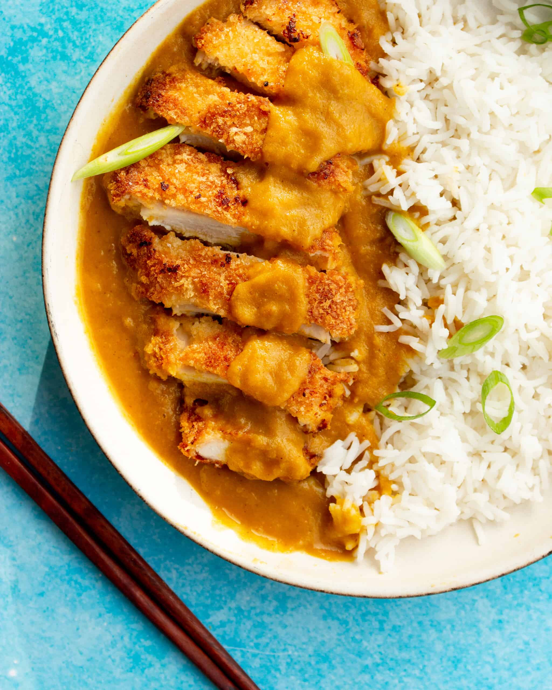

Katsu

A yummy chicken katsu curry
Katsu is a crispy fried cutlet of meat or seafood made with flaky Japanese panko breadcrumbs
Similar in form to a German schnitzel, katsu is one of many Western foods that has been adopted, adapted to suit local tastes, and become a key part of Japanese cuisine
Ingredients
- cornflour
- Chicken mini fillents
- breadcrumbs
- coconut milk
Steps
- First, make the curry sauce. Heat 1 tbsp oil in a pan, cook the onions and chopped carrots until the onions are soft and starting to caramelise, about 8 mins. Add the garlic and ginger and sizzle for another 30 secs, then stir in the curry powder and turmeric.
- First, make the curry sauce. Heat 1 tbsp oil in a pan, cook the onions and chopped carrots until the onions are soft and starting to caramelise, about 8 mins. Add the garlic and ginger and sizzle for another 30 secs, then stir in the curry powder and turmeric.
- Heat the oil in a frying pan and cook the chicken or tofu for 4-5 mins on each side until golden and cooked through.